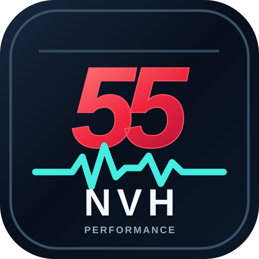

ฟังให้เห็น ก่อนถอดเปลี่ยน
ตรวจความถี่เสียงรถด้วยไมโครโฟนมือถือ วิเคราะห์ FFT / Waveform / Spectrogram และเทียบการวัดก่อน–หลังซ่อม ใช้ Chrome ผ่าน HTTPS
📖 คู่มือ 55 PERFORMANCE NVH — วิธีวัดและอ่านค่าทีละขั้น
โปรแกรมรับ เสียงในอากาศจากไมโครโฟน Android แล้วใช้ FFT แยกพลังงานตามความถี่ วาดรูปคลื่นและกราฟความถี่ตามเวลา พร้อมคำนวณความถี่ที่สัมพันธ์กับรอบเครื่องจาก RPM ที่ช่างกรอกเอง เครื่องมือนี้ช่วยหาเบาะแสของเสียงผิดปกติ ไม่ใช่เครื่องฟันธงอะไหล่เสีย
01 · เริ่มวัดเสียงจริง
- เปิดหน้าเว็บนี้ด้วย Chrome ผ่าน HTTPS หรือไอคอนที่ติดตั้งบนหน้าจอ
- กด เริ่มไมค์จริง และอนุญาตให้ใช้ไมโครโฟน
- วางมือถือ ณ จุดปลอดภัยและกำหนดระยะห่างคงที่
- รอกราฟนิ่งแล้วบันทึก Hz หรือกด Before / After
- กด หยุดวัด เมื่อเสร็จ
โหมด DEMO เป็นเสียงจำลอง ไม่ใช่ค่าจากรถ ห้ามนำไปวินิจฉัยจริง
02 · อ่านตัวเลขบนสุด
PEAK FREQUENCY (Hz) ความถี่ที่เด่นที่สุดในย่านที่เลือก เช่น 185 Hz แปลว่าพบองค์ประกอบเสียงเด่นประมาณ 185 รอบคลื่นต่อวินาที ไม่ได้แปลว่าลูกปืนเสีย
SECOND PEAK ความถี่เด่นอันดับรอง อาจเป็นฮาร์มอนิกของเสียงเดียวกันหรือแหล่งเสียงอื่น
SIGNAL LEVEL (dBFS) ระดับสัญญาณดิจิทัล: ค่าใกล้ 0 dBFS คือสัญญาณแรงขึ้น เป็น ไม่ใช่ dB SPL และไม่ใช่ระดับเสียงจริงที่สอบเทียบ
03 · Frequency Spectrum (FFT)
แกนนอนเป็น Hz (ซ้ายความถี่ต่ำ → ขวาความถี่สูง) กราฟยิ่งสูงหมายถึงพลังงานเสียงในย่านนั้นมาก เลือกย่าน 500 / 2,000 / 8,000 Hz เพื่อซูมช่วงที่สนใจ
ตัวอย่าง: พบยอดที่ 120 Hz และ 240 Hz อาจเกี่ยวข้องกันเป็นความถี่หลักกับ 2 เท่า ควรลองเปลี่ยนรอบหรือเงื่อนไขงานเพื่อดูว่ายอดเคลื่อนตามหรือไม่
04 · Waveform และ Spectrogram
Waveform: รูปร่างสัญญาณตามเวลา ใช้ดูจังหวะเสียงกระแทก เสียงเป็นพัก ๆ หรือสัญญาณที่ดังขึ้น ไม่สามารถระบุชิ้นส่วนจากรูปคลื่นลำพัง
Spectrogram: ซ้ายคืออดีต ขวาคือปัจจุบัน; ความถี่ต่ำอยู่ล่าง สูงอยู่บน แถบสีสว่างแสดงพลังงานมากขึ้น เส้นแนวนอนต่อเนื่องอาจหมายถึงเสียงคงที่ เส้นที่เลื่อนขึ้นเมื่อเร่งอาจสัมพันธ์กับรอบ
05 · RPM / Engine Order
ใส่ RPM จากหน้าปัดหรือเครื่องสแกน ด้วยตนเอง (โปรแกรมยังไม่อ่าน ECU) โปรแกรมคำนวณ: 1× = RPM ÷ 60; 2× และ 4× คือสองและสี่เท่า
เช่น 1,500 RPM → 1× = 25 Hz, 2× = 50 Hz, 4× = 100 Hz; ค่า Firing สำหรับเครื่อง 4 จังหวะคำนวณจากจำนวนสูบ แต่แรงสั่นจริงมีฮาร์มอนิกและแหล่งอื่นได้
06 · ก่อน–หลังซ่อม / Export
วัดใน ตำแหน่งเดิม ระยะเดิม RPM เดิม และสภาพแวดล้อมใกล้เคียงกัน แล้วกด BEFORE ก่อนซ่อม และ AFTER หลังซ่อม ระบบเทียบค่าเฉลี่ยช่วงล่าสุดประมาณ 5 วินาที
กด เริ่มบันทึกเสียง เพื่อบันทึก WebM; CSV เพื่อส่งออกค่าตามเวลา; PNG เพื่อเก็บรูป FFT ระหว่างตรวจ
07 · อาการที่ใช้ช่วยตรวจได้
| อาการ | วิธีเปรียบเทียบ | ข้อควรระวังในการตีความ |
|---|---|---|
| เสียงหอนตามรอบเครื่อง | เปรียบเทียบ FFT ที่เดินเบาและรอบสูงขึ้นขณะรถจอดอย่างปลอดภัย | เสียงอาจมาจากสายพาน ลูกลอก พัดลม หรือระบบอื่น ไม่ใช่คำยืนยัน |
| เสียงหอนตามความเร็วรถ | บันทึกในห้องโดยสารด้วยอุปกรณ์ยึดแน่น ให้ผู้โดยสารเป็นผู้ควบคุม | มือถืออย่างเดียวแยกลูกปืนล้อ ยาง และเฟืองท้ายไม่ได้แน่นอน |
| เสียงกุกกัก / กระแทก | ดู Waveform และ Spectrogram ว่าเกิดเป็นช่วงใด | ต้องตรวจช่วงล่างเชิงกลและทดสอบซ้ำ |
| ตรวจหลังเปลี่ยนอะไหล่ | เทียบ BEFORE / AFTER ภายใต้เงื่อนไขเดิม | Auto Gain Control ของไมค์อาจเปลี่ยนระดับเสียงที่วัดได้ |
📲 วิธีติดตั้งไอคอนบน Android
- เปิด https://tanawattanwa22-dotcom.github.io/amber-world-class/nvh/ ใน Chrome
- แตะ ⋮ มุมขวาบน เลือก ติดตั้งแอป หรือ เพิ่มลงในหน้าจอหลัก (ชื่อเมนูขึ้นอยู่กับรุ่น Chrome)
- ยืนยันติดตั้ง จะเห็นไอคอน 55 PERFORMANCE NVH บนหน้าจอมือถือ
- เข้าไอคอนแล้วกดเริ่มไมโครโฟนเพื่อวัดจริง หากไม่ขึ้นไอคอนใหม่ให้ลบทางลัดเก่าและเพิ่มอีกครั้ง
Frequency Spectrum SIMULATED
FFT แบบสด · ใช้วิเคราะห์เสียงหอนและความถี่ที่สัมพันธ์กับรอบ
Waveform
รูปคลื่นเสียงที่ได้รับจากไมโครโฟน
Spectrogram
แผนภาพความถี่ต่อเนื่องตามเวลา · ด้านซ้ายคืออดีต ด้านขวาคือปัจจุบัน
RPM / Order Assist
เทียบความถี่เสียงกับความถี่รอบเครื่องยนต์
*ความถี่จุดระเบิดเชิงทฤษฎีของเครื่อง 4 จังหวะ จุดระเบิดสม่ำเสมอ สูตร: (RPM ÷ 60) × จำนวนสูบ ÷ 2 ค่าอาจไม่ตรงกับเสียงจริงทุกกรณี
ก่อน / หลังซ่อม
เก็บค่ากลางย้อนหลังประมาณ 5 วินาทีต่อหนึ่งการวัด
Record & Export
เก็บหลักฐานประกอบการวิเคราะห์และรายงาน
📈 กราฟที่บันทึกไว้ · ดูหลังหยุดวัด
กราฟระดับเสียงและความถี่ตามเวลา | คลิกเล่นเสียงที่บันทึกไว้ได้
ระดับสัญญาณ dBFS
ความถี่เด่น Hz
เปิดไมค์จริง → กดบันทึกเสียง → กดหยุดบันทึก → กดหยุดวัด จะมีกราฟย้อนหลังให้ดูตรงนี้
กราฟล่าสุดจะเก็บในเบราว์เซอร์เครื่องนี้ (สูงสุด 2,000 จุด) เพื่อเปิดใหม่ได้ แต่ไฟล์เสียงต้องกด “โหลดเสียง” เพื่อเก็บถาวร หากปิดหน้านี้ก่อนโหลดเสียง ไฟล์เสียงชั่วคราวอาจหาย ข้อมูล DEMO แสดงแยกจากเสียงจริง